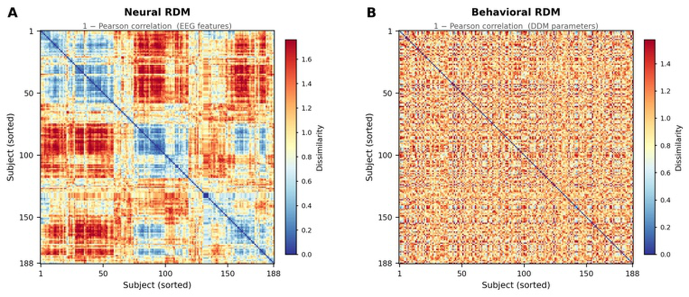
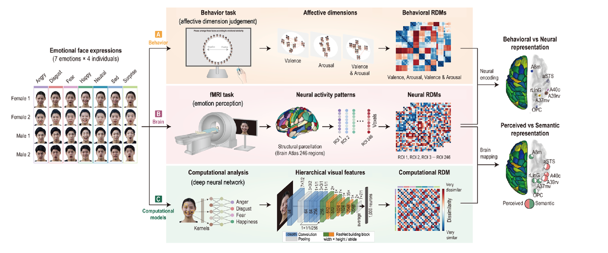
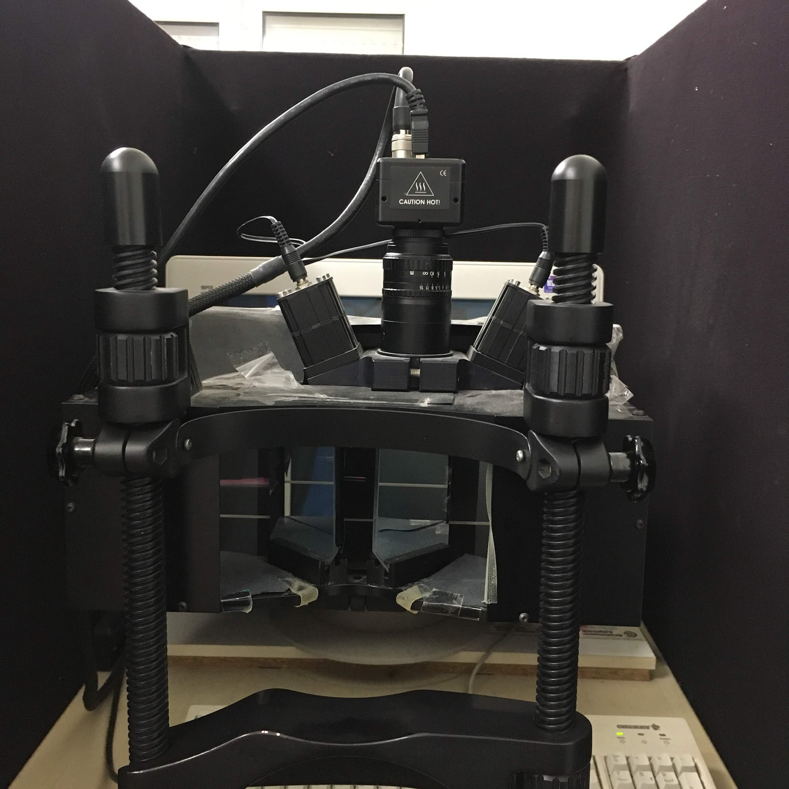

Neural & Physiological Bases of Cognition
What are the neural and physiological substrates of cognition? I ask how cognitive processes relate to brain activity and physiological signals. The three projects below use different methods and different participants; each keeps its own question.
Resting-state EEG and decision processes
Does a person’s resting brain activity carry information about how they decide?
Approach
I extract spectral, complexity, and connectivity features from eyes-closed resting EEG and relate them to drift-diffusion parameters, using multivariate association, cross-validated machine learning, mediation, and representational similarity analysis.

Methods & tools
- EEG preprocessing and feature extraction
- Representational similarity analysis
- Drift-diffusion modeling
- Python
- Machine-learning prediction with Hyunju Kim
Status
Early draft. The links are small and strongest for response caution and temporal regions, so I read them as exploratory evidence of a weak link. Next steps are validation in held-out data and robustness checks. The behavioral side is described under suboptimal decision-making.
Emotion representations in fMRI
Valence and arousal organize how we read emotional faces. Does the brain’s geometry for these dimensions match the geometry of our judgments?
Approach
Participants categorized emotional faces along valence, arousal, or both during fMRI. Representational similarity analysis compared behavioral and neural geometries across brain regions. The work was done at the Korea Brain Research Institute with Yeji Seo and Dongha Lee.

Methods & tools
- Behavioral experiments
- fMRI
- MATLAB
- Study designed by Dongha Lee
- Computational analysis by Yeji Seo and Dongha Lee
Findings
Behavior and brain showed similar structure for each dimension, with valence and arousal represented in partly different networks.
- Lee, Y., Seo, Y., Lee, Y., & Lee, D. (2023). Dimensional emotions are represented by distinct topographical brain networks. International Journal of Clinical and Health Psychology, 23(4), 100408.
Reward, pupil responses, and visual awareness
Does reward value help a stimulus reach awareness, and if so, at which processing stage?
Approach
Under continuous flash suppression, a faint target competed with a flashing mask, viewed through a mirror stereoscope. Targets signaled a high or low probability of reward, and I recorded response time and pupil size.

ApparatusMirror stereoscopeMethods & tools
- Behavioral experiments
- Eye tracking
- Mixed-effects modeling
- Bayesian statistics
- MATLAB
Findings
Reward probability left response times and pupil responses essentially unchanged, and the statistics favored a null effect under these conditions.
- Master’s thesis, Freie Universität Berlin (2022): The Influence of Value Information on the Access of Visual Stimuli to Awareness